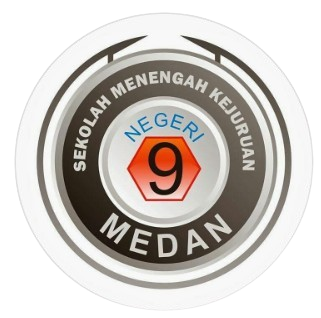
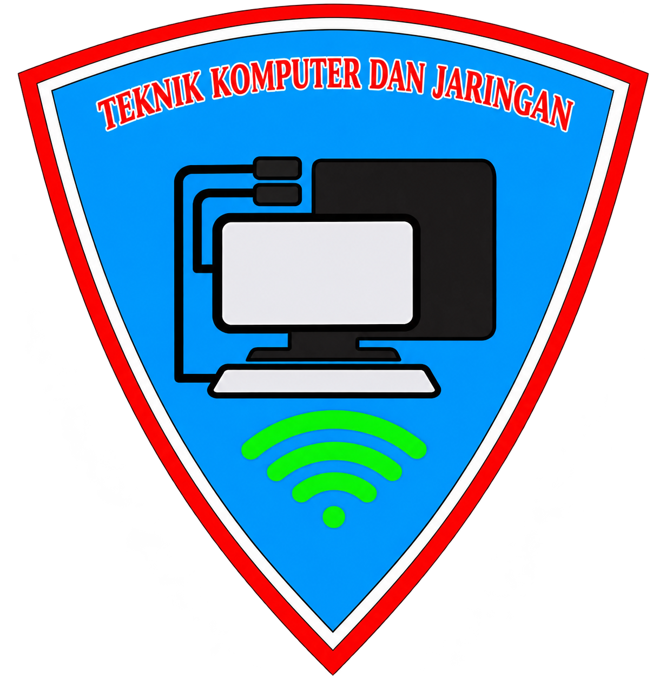
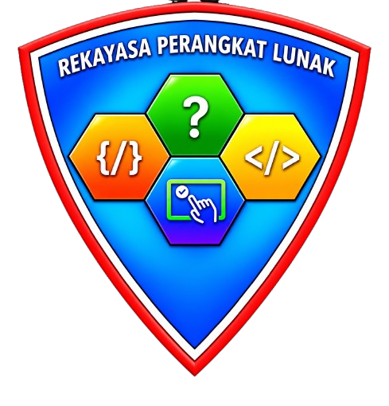
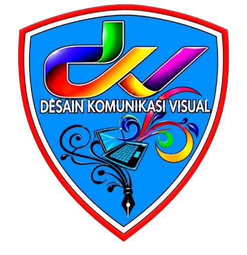
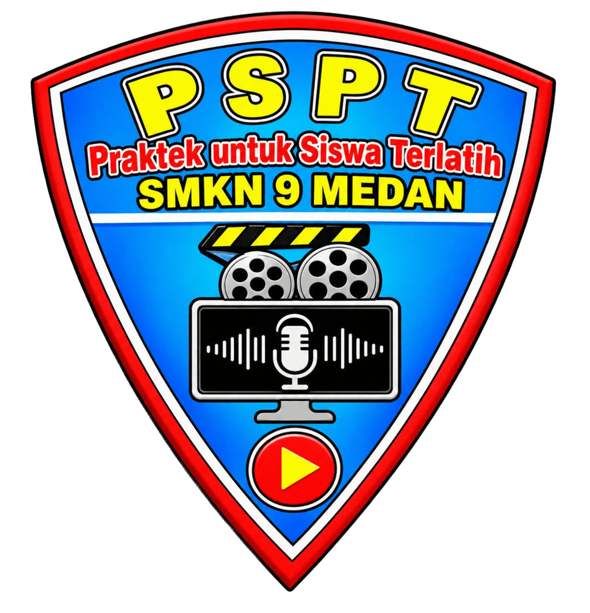
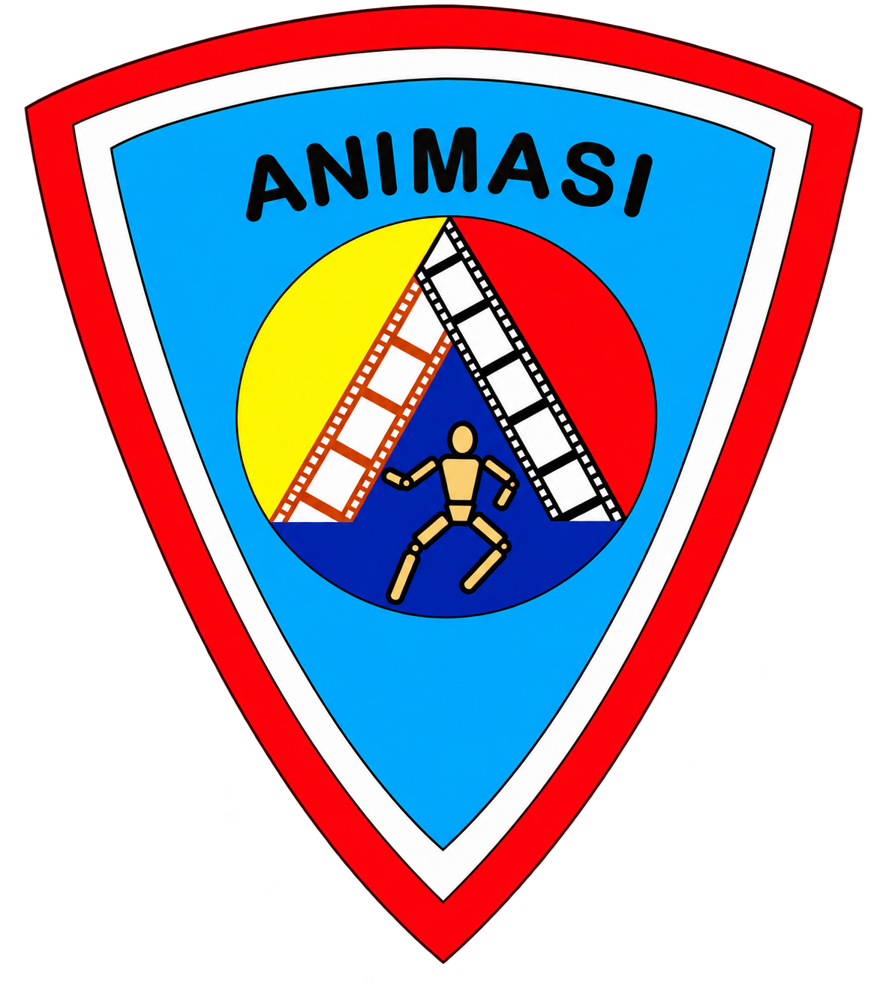

Selamat datang di situs web SMK Negeri 9 Medan, berkomitmen untuk mencetak generasi unggul, berkarakter mulia, dan siap menghadapi tantangan masa depan. Kami terus berinovasi dalam menghadirkan lingkungan belajar yang aman, inklusif, dan inspiratif bagi setiap peserta didik.





SMK Negeri 9 Medan menghadirkan beragam program keahlian unggulan yang dirancang sesuai kebutuhan industri masa kini untuk membekali siswa dengan keterampilan siap kerja dan berdaya saing tinggi.
Berikut semua jurusan yang ada di SMK Negeri 9 Medan:
Teknik Komputer dan Jaringan (TKJ)
Rekayasa Perangkat Lunak (RPL)
Desain Komunikasi Visual (DKV)
Social Care (Pekerjaan Sosial)
Produksi dan Siaran Program Televisi (PSPT)
Animasi
Kontak:
(061) 8454350
smkn09medan@gmail.com
Asisten AI Peax: